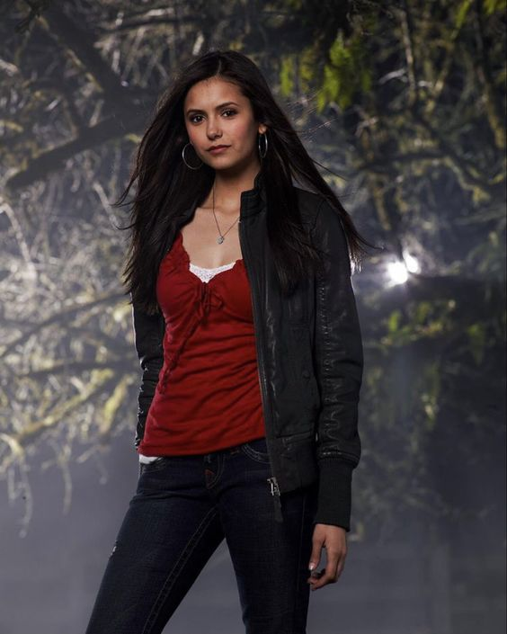
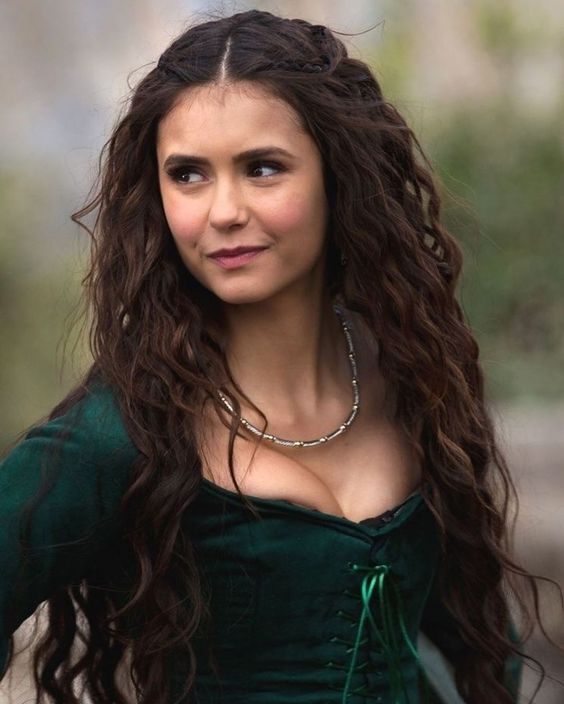

Ian Somerhalder só precisou fazer dois testes para conseguir o papel de Damon Salvatore, mas a competição foi pesada, inclusive seus futuros colegas de elenco. Paul Wesley (Stefan Salvatore), Zach Roerig (Matt Donovan), Michael Trevino (Tyler Lockwood) e Nathaniel Buzolic (Kol Mikaelson) também fizeram audições para interpretar o "vilão".
Durante um bom tempo, Williamson tentou encontrar uma forma de escalar Taylor Swift para um papel de TVD, principalmente após descobrir que ela era fã do show. Ele chegou a tentar escrever uma personagem para ela, mas nunca deu certo. Por sua vez, a queridinha Lexi (Arielle Kebbel) é livremente inspirada na cantora responsável por hits como "You Belong With Me" e "Look What You Made Me Do".
Pode parecer ridículo, mas muitos fãs dos livros de L.J. Smith odiaram a escolha de Nina Dobrev para o papel de Elena, por conta de sua aparência física. Na obra original, Elena Gilbert é descrita com cabelos loiros e olhos azuis, enquanto Nina tem olhos e cabelos castanhos. Enquanto a própria L.J. Smith teve dificuldades para aceitar a escalação, tal mudança foi uma ideia de Kevin Williamson, que queria ver uma protagonista mais acessível, como "the girl next door".
Os irmãos Mikaelsons sempre foram um destaque de TVD, mas Elijah (Daniel Gillies) deveria ter morrido logo em seu episódio de estreia. Inicialmente, ele devia ser um empregado de Klaus (Joseph Morgan), depois virou seu irmão. Mas duas coisas impediam Julie Plec de matar o personagem; a primeira era o problema de como explicar a morte de um vampiro original, algo ainda não desvendado na trama. A segunda? O talento de Daniel Gillies era bom demais para ser desperdiçado. Algo semelhante aconteceu com o próprio Klaus, que devia ter morrido na terceira temporada, mas era amado demais pelos fãs para isso. O resultado? Ganharam sua própria série em The Originals.
Katherine Pierce, também conhecida como Katerina Petrova, fala búlgaro fluentemente porque Nina Dobrev é búlgara. O nome verdadeiro da atriz é Nikolina Konstantinova Dobreva, então essa habilidade acabou sendo incorporada em uma das vilãs mais amadas de TVD. Nos livros, o nome verdadeiro de Katherine era Katherine von Swartzschild, derivado de raízes alemãs.
